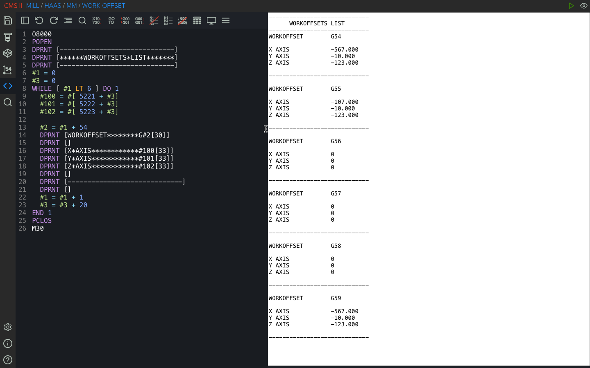

Understanding DPRNT in Fanuc Macro Programming
The DPRNT command is widely used in Fanuc Macro B programming to output data from a CNC
machine to an external
device such as a computer, printer, or monitoring system. It allows programmers to record machining data,
offsets, or inspection results directly from the control. When used correctly, DPRNT becomes
a powerful tool
for process monitoring, quality control, and automated data
logging in CNC machining.
Character Rules
DPRNT allows you to use formatted data consisting of both text and arbitrary variables. The
text portion can
contain uppercase letters (A-Z), numbers (0–9), and a limited set of
special characters such as +, −,
/, *, ., etc. Variables cannot be used as aliases: SETVN or in indexable form:
#[<value>]
An asterisk (*) represents a space. This is commonly
used to structure
readable output
lines.
Basic Structure
DPRNT commands typically operate within an output session that begins with
POPEN and ends
with PCLOS.
POPEN
DPRNT []
PCLOS
- POPEN - opens the communication channel.
- DPRNT [] - can contain formatted text and variables, as well as be empty, which will be displayed as a new line
- PCLOS - closes the output channel.
Everything inside the brackets is transmitted through the CNC control’s output interface.
Formatting Macro Variables
Variables can be formatted using the structure:
#100[ab]
Where:
- a - specifies the number of digits before the decimal point
- b - specifies the number of digits after the decimal point
For example:
#100[33]
This prints the value of variable #100 with three digits before and three digits after the decimal point.
Handling Null Variables
Different Fanuc controls treat null variables differently.
- Fanuc 6 – Null variables cannot be printed and will trigger Alarm #114.
- Fanuc 10/11/15/16/18/21 – Null variables are automatically printed as 0.
- Haas – Null variables are automatically printed as 0.
Practical Example
The following code outputs all work offsets from G54 to G59:

Why DPRNT Is Useful
DPRNT is commonly used in CNC environments for:
- Automatic offset reporting
- SPC and quality data collection
- Recording probing results
- Logging tool or process data
- Integrating machines with external monitoring systems
For advanced CNC macro users, DPRNT provides a simple but effective way to connect machining
processes with
digital data tracking.